Documentação do Fornecedor - eProcurement
Este módulo permite o cadastro e consulta de notas fiscais e o envio das mesmas para os clientes.
Conforme foi demonstrado no tópico anterior, uma nota fiscal pode ser gerada automaticamente após a confirmação de um pedido. Porém, mesmo sendo gerada automaticamente, é preciso terminar de preenchêla. Para fazer isto, bastar clicar no botão “Consulta” para que todas as notas fiscais que ainda não foram enviadas para seus respectivos clientes sejam listadas. Em seguida, encontre o CNPJ do cliente da nota fiscal e clique sobre o registro correspondente. Fazendo isto, aparecerá a seguinte tela:
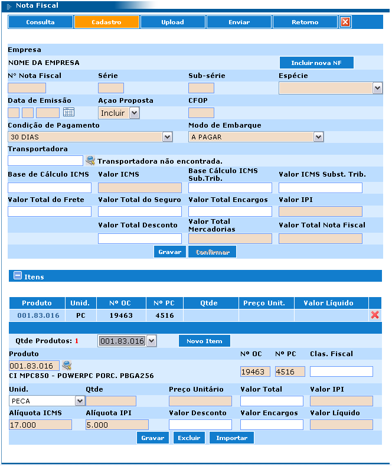Inicialmente, só o cabeçalho da nota fiscal é exibido. Para que seus itens fiquem visíveis, é preciso clicar no botão “+” destacado na figura acima. Quando ele é pressionado uma vez, os itens da nota são exibidos e, quando pressionado pela segunda vez, os mesmos são ocultados.
Após clicar neste botão, é exibida uma listagem contendo todos os itens da nota fiscal (observe a seta vermelha na figura acima). É importante ressaltar que só aparecerão na nota fiscal os itens que foram selecionados antes de clicar no botão “gerar NF” lá no pedido.
Para alterar um item, basta clicar sobre seu código na listagem ou selecioná-lo no campo destacado que fica ao lado do botão “Novo Item”. Para efetivar as alterações feitas no item selecionado, basta clicar no botão “Gravar”. Vale lembrar que é necessário clicar no botão “Gravar” antes de trocar de item, caso contrário, as alterações serão perdidas.
Para excluir as informações do item, basta clicar no botão Excluir.
Para facilitar o preenchimento das informações de um item, é possível importar tais informações de uma OC. Para fazer isto, basta preencher o campo “Nº OC” com o número da ordem de compra e clicar no botão “Importar”.
Depois de preencher o cabeçalho da nota fiscal, também é preciso gravar, ou seja, clicar no botão “Gravar” que fica ao lado do botão “Confirmar” no centro da tela.
Também é possível cadastrar uma nota fiscal de remessa. Para isto, basta clicar no botão “Cadastro” no topo da tela, preencher as informações de cabeçalho e clicar no botão “Gravar”. Após isto, o botão “+” para a inclusão de itens ficará habilitado e o processo de inclusão, alteração e exclusão de itens na nota fiscal é igual ao descrito anteriormente neste tópico.
Uma nota fiscal só pode ser enviada para o cliente (a este processo dá-se o nome de sincronismo) se ela for confirmada pelo fornecedor. Para fazer isto, basta clicar no botão “Confirmar” após ter feito a gravação da nota fiscal.
Para sincronizar notas fiscais é preciso clicar no botão “Enviar” no topo da tela e, em seguida, no botão “sincronizar”.
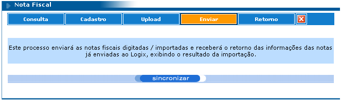Depois de efetuar o sincronismo com sucesso, é preciso aguardar vinte minutos para consultar o retorno da importação.
Para fazer esta consulta, basta clicar no botão “Retorno”. Será exibida uma tela de filtro para a consulta do retorno da importação das notas fiscais, conforme mostra a figura a seguir. Preencha-a de acordo com a necessidade e clique no botão “consultar”.
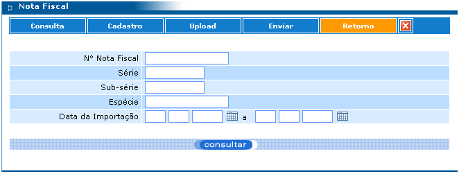Na listagem exibida na tela, clique sobre a nota fiscal que deseja saber o retorno da importação.
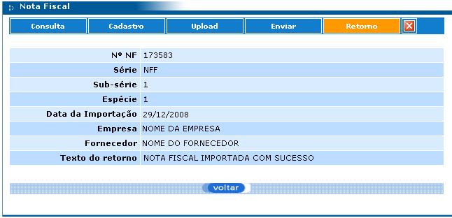Fornece acesso a consulta de Informações Financeiras e possui os seguintes filtros:
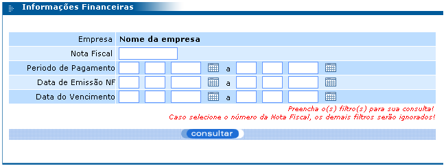Após preencher os filtros conforme sua necessidade e clicar no botão “consultar”, é exibida a listagem a seguir:
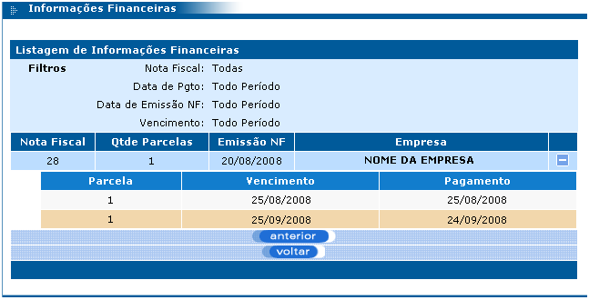Para exibir e ocultar as parcelas referentes a uma nota fiscal, basta clicar no botão “+” e “-”.
Clicando sobre qualquer registro da listagem, pode-se visualizar mais detalhes de cada parcela, veja:
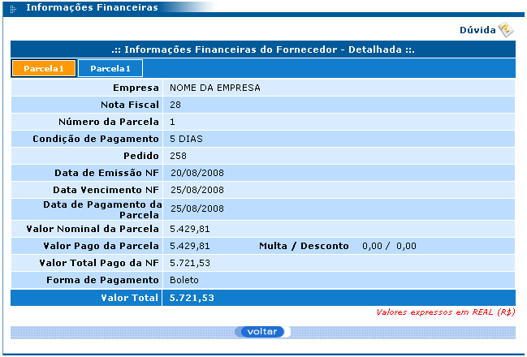Observe que no topo da tela existe um botão chamado “Parcela 1”. A quantidade de botões exibida neste local é igual à quantidade de parcelas da compra. Para visualizar os detalhes de cada parcela, basta clicar sobre seu respectivo botão.
O funcionamento deste menu é igual ao do menu Diferenças descrito no módulo Clientes, na página 12 deste manual.
Além da compra pelo melhor preço a empresa poderá utilizar a modalidade de Leilão para algumas ordens de compra. Para que isso ocorra, a empresa deverá indicar quais ordens de compra deverão ser disponibilizadas na modalidade de Leilão.
Após a disponibilização da ordem de compra no e-Procurement, o fornecedor terá acesso às informações do produto a ser comprado, poderá saber qual foi o melhor preço oferecido até o momento e inserir sua oferta.
Sempre que a melhor oferta para os produtos for superada, o eProcurement enviará um e-mail para o fornecedor que estava liderando a ordem de compra, informando que sua oferta foi superada.
Com esse mecanismo, todos os fornecedores participantes de uma cotação poderão alterar suas ofertas até a data limite para o encerramento do processo, independente de sua oferta anterior ter sido considerada a melhor ou não.
Após a conclusão do Leilão, a melhor oferta será enviada ao sistema ERP da empresa para a elaboração do pedido de compra. Uma vez elaborado o pedido, o restante do procedimento é o mesmo descrito anteriormente.
O funcionamento deste menu é igual ao do menu Canal Aberto descrito no módulo Clientes, na página 17 deste manual.
O funcionamento deste menu é igual ao do menu Itens descrito no módulo Clientes.
Este módulo acesso ao cadastro do fornecedor no e-Procurement. Neste módulo o fornecedor pode alterar os seguintes campos: “Login”, “Senha”, “Destacar cotações que vencerão em”, “Idioma que deseja receber os e-mails”, “Exibir listagens com”, “Vendedor principal”, “Servidor de e-mail” e “E-mail do responsável pelo Canal Aberto”.
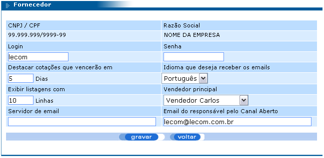A função de um vendedor no e-Procurement é responder as cotações. Sendo assim, o fornecedor pode cadastrar vários vendedores e cada um deles pode cuidar de cotações diferentes.
Este módulo permite a inclusão, alteração, exclusão e consulta de vendedores. A tela de consulta possui os seguintes filtros:
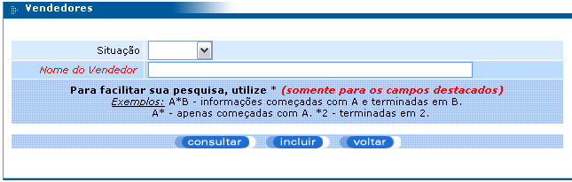Após clicar no botão “consultar”, é exibida uma listagem constando todos os vendedores que se encaixam no filtro informado. Clicando sobre um vendedor desta listagem, é aberta a tela de cadastro do vendedor para que ele possa ser alterado ou excluído.
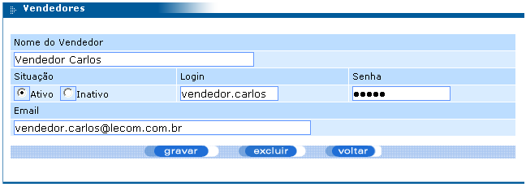Para incluir um novo vendedor, basta clicar no botão “incluir” localizado na tela de filtros para consulta de vendedores.
Este módulo serve para vincular e desvincular um vendedor a uma ou mais cotações.
Para vincular um vendedor a uma ou mais cotações, basta consultar as cotações sem vendedor vinculado e, na listagem que for exibida, selecionar cada uma das cotações que deseja vincular ao vendedor selecionado no campo Vendedor e clique no botão “gravar”. Observe:
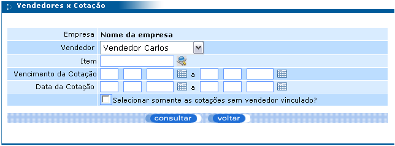 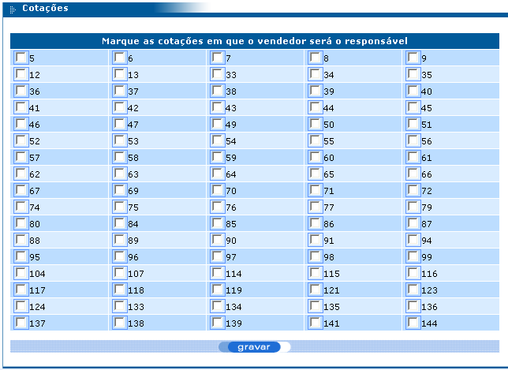Para desvincular um vendedor de uma ou mais cotações, basta consultar as cotações filtrando pelo vendedor e, na listagem de cotações, desmarcar as cotações que desejar.